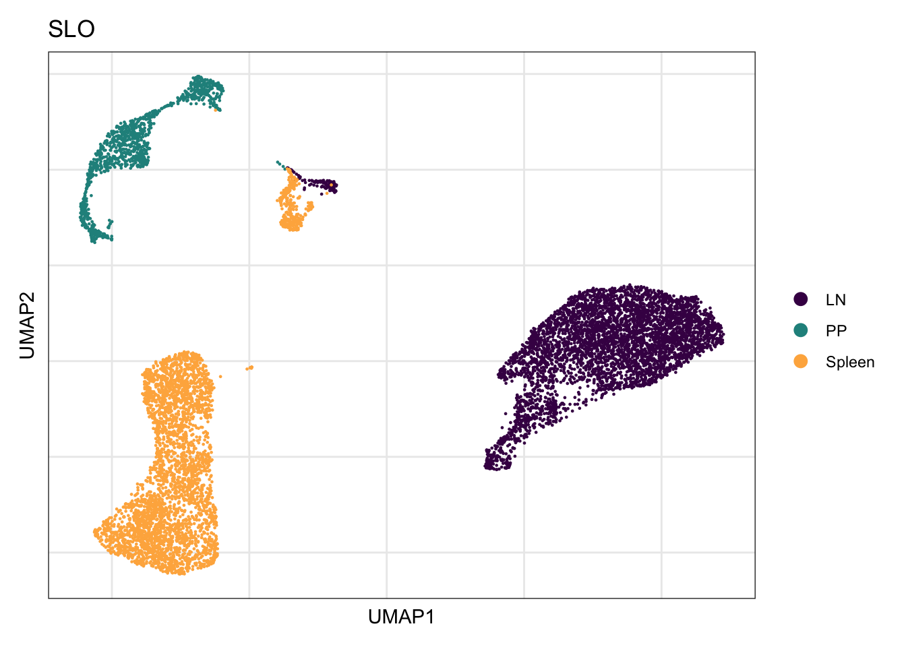
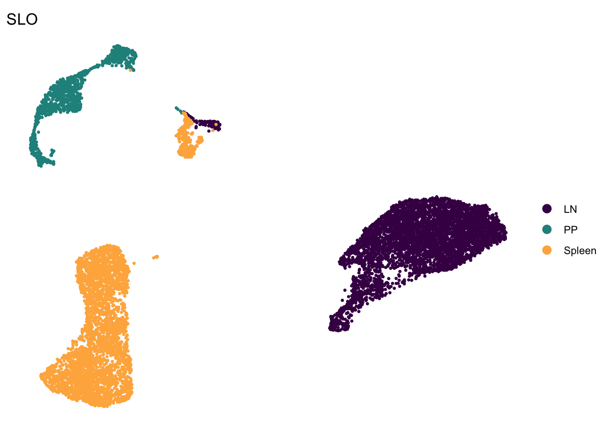

organ specific signatures - BRCs only
Mechthild Lütge
14 May 2020
Last updated: 2021-07-28
Checks: 6 1
Knit directory: CrossSLO_BRC_CXCL13/
This reproducible R Markdown analysis was created with workflowr (version 1.6.2). The Checks tab describes the reproducibility checks that were applied when the results were created. The Past versions tab lists the development history.
The R Markdown is untracked by Git. To know which version of the R Markdown file created these results, you’ll want to first commit it to the Git repo. If you’re still working on the analysis, you can ignore this warning. When you’re finished, you can run wflow_publish to commit the R Markdown file and build the HTML.
Great job! The global environment was empty. Objects defined in the global environment can affect the analysis in your R Markdown file in unknown ways. For reproduciblity it’s best to always run the code in an empty environment.
The command set.seed(20210519) was run prior to running the code in the R Markdown file. Setting a seed ensures that any results that rely on randomness, e.g. subsampling or permutations, are reproducible.
Great job! Recording the operating system, R version, and package versions is critical for reproducibility.
Nice! There were no cached chunks for this analysis, so you can be confident that you successfully produced the results during this run.
Great job! Using relative paths to the files within your workflowr project makes it easier to run your code on other machines.
Great! You are using Git for version control. Tracking code development and connecting the code version to the results is critical for reproducibility.
The results in this page were generated with repository version 1f27cea. See the Past versions tab to see a history of the changes made to the R Markdown and HTML files.
Note that you need to be careful to ensure that all relevant files for the analysis have been committed to Git prior to generating the results (you can use wflow_publish or wflow_git_commit). workflowr only checks the R Markdown file, but you know if there are other scripts or data files that it depends on. Below is the status of the Git repository when the results were generated:
Ignored files:
Ignored: .Rhistory
Ignored: .Rproj.user/
Ignored: data/destiny/
Ignored: data/processedData/
Untracked files:
Untracked: analysis/SubsetSpecificGeneSignatures.Rmd
Unstaged changes:
Modified: analysis/CharacterizePP_CXCL13seurat.Rmd
Modified: analysis/CharacterizeSpleen_CXCL13seurat.Rmd
Modified: analysis/IntegrateAcrossSLOs.Rmd
Modified: analysis/SLOspecific_signature.Rmd
Modified: analysis/visFolBRC_merged.Rmd
Note that any generated files, e.g. HTML, png, CSS, etc., are not included in this status report because it is ok for generated content to have uncommitted changes.
There are no past versions. Publish this analysis with wflow_publish() to start tracking its development.
load packages
suppressPackageStartupMessages({
library(tidyverse)
library(Seurat)
library(magrittr)
library(dplyr)
library(purrr)
library(ggplot2)
library(here)
library(runSeurat3)
library(SingleCellExperiment)
library(RColorBrewer)
library(viridis)
library(ggsci)
library(scater)
library(scran)
library(pheatmap)
library(biomaRt)
library(fgsea)
library(grid)
library(gridExtra)
library(clusterProfiler)
library(org.Mm.eg.db)
library(DOSE)
library(enrichplot)
library(msigdbr)
library(muscat)
})plotting funct
avgHeatmap <- function(seurat, selGenes, colVecIdent, colVecCond=NULL,
ordVec=NULL, gapVecR=NULL, gapVecC=NULL,cc=FALSE,
cr=FALSE, condCol=FALSE){
## format gene names (depends on how gene list is inputed)
selGenes <- selGenes %>%
mutate(geneID = (str_split(gene, '\\.', simplify = T)[,2]))
#selGenes <- selGenes$labelNam
## assay data
clusterAssigned <- as.data.frame(Idents(seurat)) %>%
dplyr::mutate(cell=rownames(.))
colnames(clusterAssigned)[1] <- "ident"
seuratDat <- GetAssayData(seurat)
## genes of interest
genes <- data.frame(gene=rownames(seurat)) %>%
mutate(geneID=gsub("^.*\\.", "", gene)) %>%
filter(geneID %in% selGenes$geneID)
## matrix with averaged cnts per ident
logNormExpres <- as.data.frame(t(as.matrix(
seuratDat[which(rownames(seuratDat) %in% genes$gene),])))
logNormExpres <- logNormExpres %>% dplyr::mutate(cell=rownames(.)) %>%
dplyr::left_join(.,clusterAssigned, by=c("cell")) %>%
dplyr::select(-cell) %>% dplyr::group_by(ident) %>%
dplyr::summarise_all(mean)
logNormExpresMa <- logNormExpres %>% dplyr::select(-ident) %>% as.matrix()
rownames(logNormExpresMa) <- logNormExpres$ident
logNormExpresMa <- t(logNormExpresMa)
rownames(logNormExpresMa) <- gsub("^.*?\\.","",rownames(logNormExpresMa))
## remove genes if they are all the same in all groups
ind <- apply(logNormExpresMa, 1, sd) == 0
logNormExpresMa <- logNormExpresMa[!ind,]
genes <- genes[!ind,]
## color columns according to cluster
annotation_col <- as.data.frame(gsub("(^.*?_)","",
colnames(logNormExpresMa)))%>%
dplyr::mutate(celltype=gsub("(_.*$)","",colnames(logNormExpresMa)))
colnames(annotation_col)[1] <- "col1"
annotation_col <- annotation_col %>%
dplyr::mutate(cond = gsub("(^[0-9]_?)","",col1)) %>%
dplyr::select(cond, celltype)
rownames(annotation_col) <- colnames(logNormExpresMa)
ann_colors = list(
cond = colVecCond,
celltype=colVecIdent)
if(is.null(ann_colors$cond)){
annotation_col$cond <- NULL
}
## adjust order
logNormExpresMa <- logNormExpresMa[selGenes$geneID,]
if(is.null(ordVec)){
ordVec <- levels(seurat)
}
logNormExpresMa <- logNormExpresMa[,ordVec]
## scaled row-wise
pheatmap(logNormExpresMa, scale="row" ,treeheight_row = 0, cluster_rows = cr,
cluster_cols = cc,
color = colorRampPalette(c("#45628f", "#F7F7F7", "#de425b"))(50),
annotation_col = annotation_col, cellwidth=15, cellheight=10,
annotation_colors = ann_colors, gaps_row = gapVecR, gaps_col = gapVecC)
}set dir and read input data
basedir <- here()
## read seurat objects with BRCs
seurat <- readRDS(file=paste0(basedir, "/data/folBRC_allSLO_seurat.rds"))
## seurat <-rerunSeurat3(seurat)
## saveRDS(seurat, file=paste0(basedir, "/data/folBRC_allSLO_seurat.rds"))set color Vectors
colPal <- c("#87c5af", "#94033b", "#fc8f3b", "#2580fe", "#514e72")
names(colPal) <- c("LZFDC", "MRC", "TBRC","DZFDC","PRC2")
colorSLO <- c(viridis(3)[c(1,2)], brewer.pal(n=9, name="YlOrRd")[c(4)])
colorCond <- brewer.pal(n=3, name="Paired")[c(1,2)]
colorSLOCond <- c("#440154FF","#807DBA", "#FEB24C", "#F16913", "#21908CFF")
colorBatch <- pal_igv()(n=length(unique(seurat$batch)))
colCl <- c(rcartocolor::carto_pal(name="Safe"),pal_aaas()(8))
names(colorSLO) <- c("LN", "PP", "Spleen")
names(colorCond) <- c("naive", "immunized")
names(colorBatch) <- unique(seurat$batch)
names(colorSLOCond) <- c("LN_immunized","LN_naive", "Spleen_naive",
"Spleen_immunized", "PP_immunized")visualize data
clustering
DimPlot(seurat, reduction = "umap", cols=colPal, group.by = "clusterLabel")+
theme_bw() +
theme(axis.text = element_blank(), axis.ticks = element_blank(),
panel.grid.minor = element_blank()) +
xlab("UMAP1") +
ylab("UMAP2")
SLO
DimPlot(seurat, reduction = "umap", cols=colorSLO, group.by = "SLO")+
theme_bw() +
theme(axis.text = element_blank(), axis.ticks = element_blank(),
panel.grid.minor = element_blank()) +
xlab("UMAP1") +
ylab("UMAP2")
DimPlot(seurat, reduction = "umap", cols=colorSLO, group.by = "SLO",
pt.size=0.6)+
theme_void()
Batch
DimPlot(seurat, reduction = "umap", cols=colorBatch, group.by = "batch")+
theme_bw() +
theme(axis.text = element_blank(), axis.ticks = element_blank(),
panel.grid.minor = element_blank()) +
xlab("UMAP1") +
ylab("UMAP2")Cond
DimPlot(seurat, reduction = "umap", cols=colorCond, group.by = "cond")+
theme_bw() +
theme(axis.text = element_blank(), axis.ticks = element_blank(),
panel.grid.minor = element_blank()) +
xlab("UMAP1") +
ylab("UMAP2")
SLO plus cond
DimPlot(seurat, reduction = "umap", cols=colorSLOCond,group.by="SLO_plus_cond")+
theme_bw() +
theme(axis.text = element_blank(), axis.ticks = element_blank(),
panel.grid.minor = element_blank()) +
xlab("UMAP1") +
ylab("UMAP2")
DimPlot(seurat, reduction = "umap",cols=colorSLOCond,group.by = "SLO_plus_cond",
pt.size=0.6)+
theme_void()
subset specific marker
Idents(seurat) <- seurat$clusterLabel
seurat$SLO_clusterLabel <- paste0(seurat$SLO, "_", Idents(seurat))
seurat$clusterLabel <- factor(seurat$clusterLabel,
levels=c("LZFDC", "DZFDC", "MRC", "TBRC","PRC2"))
clVec <- levels(seurat$clusterLabel)
conservedMarker <- lapply(clVec, function(cl){
markers <- FindConservedMarkers(seurat, ident.1 = cl, ident.2 = NULL,
grouping.var = "SLO", only.pos =T,
assay = "originalexp") %>%
mutate(subset=cl)
})
names(conservedMarker) <- clVecsc heatmap SLO specific marker
conservedMarkerDat <- do.call("rbind", conservedMarker) %>%
rownames_to_column(., var="long") %>%
mutate(ensID=gsub("^[^\\.]*\\.", "", long)) %>%
mutate(label=gsub("^.*\\.", "", ensID)) %>%
filter(PP_p_val_adj < 0.01 & Spleen_p_val_adj < 0.01 & LN_p_val_adj < 0.01) %>%
filter(!duplicated(ensID))
DoHeatmap(seurat, features = conservedMarkerDat$ensID, group.by = "clusterLabel",
group.colors = colPal, slot = 'scale.data', label = T,
disp.min = -1, disp.max = 1.5, draw.lines = F) +
scale_fill_gradientn(colors=colorRampPalette(c("#45628f", "#F7F7F7", "#de425b"))(30)) +
scale_y_discrete(breaks=conservedMarkerDat$ensID, labels=conservedMarkerDat$label)
only markers that diff up in all pairwise comparisons
clVec <- levels(seurat$clusterLabel)
highlyConservedMarker <- lapply(clVec, function(cl){
otherCl <- clVec[which(clVec!=cl)]
consMarker <- NULL
for(i in 1:length(otherCl)){
cl2 <- otherCl[i]
markers <- FindMarkers(seurat, ident.1 = cl, ident.2 = cl2,
only.pos = T) %>%
filter(p_val_adj <0.01) %>%
rownames_to_column(., var = "gene")
if(is.null(consMarker)){
consMarker <- markers$gene
}
consMarker <- consMarker[which(consMarker %in% markers$gene)]
}
consMarkerDat <- data.frame(gene=consMarker) %>%
mutate(subset=cl)
return(consMarkerDat)
})
names(highlyConservedMarker) <- clVec
hConservedMarkerDat <- do.call("rbind", highlyConservedMarker) %>%
mutate(label=gsub("^.*\\.", "", gene))
seurat$label_plus_SLO <- paste0(seurat$clusterLabel, "_", seurat$SLO)
DoHeatmap(seurat, features = hConservedMarkerDat$gene, group.by = "clusterLabel",
group.colors = colPal, slot = 'scale.data', label = T,
disp.min = -1, disp.max = 1.5, draw.lines = F) +
scale_fill_gradientn(colors=colorRampPalette(c("#45628f", "#F7F7F7", "#de425b"))(30)) +
scale_y_discrete(breaks=hConservedMarkerDat$gene, labels=hConservedMarkerDat$label) ## GSEA clusterProfiler {.tabset} ### cons genes
## GSEA clusterProfiler {.tabset} ### cons genes
clVec <- levels(seurat$clusterLabel)
GOcons <- lapply(clVec, function(cl){
conservedMarkerDatSub <- conservedMarkerDat %>%
filter(subset == cl) %>% mutate(ENS=gsub("\\..*$", "", ensID)) %>%
slice_min(., max_pval, n=200)
egoSS <- enrichGO(gene = unique(conservedMarkerDatSub$ENS),
OrgDb = org.Mm.eg.db,
keyType = 'ENSEMBL',
ont = "BP",
pAdjustMethod = "BH",
pvalueCutoff = 0.05,
qvalueCutoff = 0.05)
egoSS <- setReadable(egoSS, OrgDb = org.Mm.eg.db)
egoSSres <- egoSS@result %>% filter(p.adjust < 0.05) %>%
mutate(subset=cl)
})
names(GOcons) <- clVecvis summary all
selGO <- c("LZFDC.GO:0001818","LZFDC.GO:0007159","LZFDC.GO:0032653",
"LZFDC.GO:0002822","LZFDC.GO:0070661",
"DZFDC.GO:0002688", "DZFDC.GO:0048259", "DZFDC.GO:0030336",
"MRC.GO:0050673", "MRC.GO:0007015",
"TBRC.GO:005092", "TBRC.GO:0035455", "TBRC.GO:0031295",
"TBRC.GO:0006959","TBRC.GO:0032612",
"PRC2.GO:0030198", "PRC2.GO:0035265", "PRC2.GO:0031589",
"PRC2.GO:0032755", "PRC2.GO:0032640")
GOconsDat <- do.call("rbind", GOcons) %>% rownames_to_column(., var="IDlab") %>%
filter(IDlab %in% selGO) %>%
arrange(., Count) %>% arrange(., subset) %>%
mutate(nom=as.numeric(gsub("\\/.*", "", GeneRatio))) %>%
mutate(denom=as.numeric(gsub(".*\\/", "", GeneRatio))) %>%
mutate(geneRatio=nom/denom) %>%
mutate(one_minPadjust=(1-qvalue))
level_order <- unique(GOconsDat$Description)
ggplot(GOconsDat, aes(x=factor(Description, level= level_order), y=geneRatio)) +
geom_point(aes(col=subset, size=Count, alpha=one_minPadjust)) +
scale_color_manual(values = colPal)+
scale_alpha_continuous(range = c(0.5,1), name="qvalue",
labels=c(0.04, 0.03, 0.02, 0.01),
breaks = c(0.96, 0.97, 0.98, 0.99)) +
scale_size_continuous(range = c(3,6), labels = c(2,4,6,8),
breaks = c(2,4,6,8)) +
geom_segment(aes(x=Description,
xend=Description,
y=min(geneRatio),
yend=max(geneRatio)),
linetype="dashed",
size=0.1) + # Draw dashed lines
coord_flip() +
theme_minimal() +
theme(panel.border = element_rect(fill = NA),
panel.grid = element_blank(), axis.title.y = element_blank())
session info
sessionInfo()R version 4.1.0 (2021-05-18)
Platform: x86_64-apple-darwin17.0 (64-bit)
Running under: macOS Catalina 10.15.7
Matrix products: default
BLAS: /Library/Frameworks/R.framework/Versions/4.1/Resources/lib/libRblas.dylib
LAPACK: /Library/Frameworks/R.framework/Versions/4.1/Resources/lib/libRlapack.dylib
locale:
[1] en_US.UTF-8/en_US.UTF-8/en_US.UTF-8/C/en_US.UTF-8/en_US.UTF-8
attached base packages:
[1] grid parallel stats4 stats graphics grDevices utils datasets methods
[10] base
other attached packages:
[1] muscat_1.6.0 msigdbr_7.4.1 enrichplot_1.12.2
[4] DOSE_3.18.1 org.Mm.eg.db_3.13.0 AnnotationDbi_1.54.1
[7] clusterProfiler_4.0.2 gridExtra_2.3 fgsea_1.18.0
[10] biomaRt_2.48.2 pheatmap_1.0.12 scran_1.20.1
[13] scater_1.20.1 scuttle_1.2.0 ggsci_2.9
[16] viridis_0.6.1 viridisLite_0.4.0 RColorBrewer_1.1-2
[19] SingleCellExperiment_1.14.1 SummarizedExperiment_1.22.0 Biobase_2.52.0
[22] GenomicRanges_1.44.0 GenomeInfoDb_1.28.1 IRanges_2.26.0
[25] S4Vectors_0.30.0 BiocGenerics_0.38.0 MatrixGenerics_1.4.0
[28] matrixStats_0.60.0 runSeurat3_0.1.0 here_1.0.1
[31] magrittr_2.0.1 SeuratObject_4.0.2 Seurat_4.0.3
[34] forcats_0.5.1 stringr_1.4.0 dplyr_1.0.7
[37] purrr_0.3.4 readr_2.0.0 tidyr_1.1.3
[40] tibble_3.1.3 ggplot2_3.3.5 tidyverse_1.3.1
loaded via a namespace (and not attached):
[1] rsvd_1.0.5 ica_1.0-2 foreach_1.5.1
[4] lmtest_0.9-38 rprojroot_2.0.2 crayon_1.4.1
[7] rbibutils_2.2.1 spatstat.core_2.3-0 MASS_7.3-54
[10] nlme_3.1-152 backports_1.2.1 reprex_2.0.0
[13] GOSemSim_2.18.0 rlang_0.4.11 XVector_0.32.0
[16] ROCR_1.0-11 readxl_1.3.1 irlba_2.3.3
[19] nloptr_1.2.2.2 limma_3.48.1 filelock_1.0.2
[22] BiocParallel_1.26.1 rjson_0.2.20 bit64_4.0.5
[25] glue_1.4.2 sctransform_0.3.2 pbkrtest_0.5.1
[28] vipor_0.4.5 spatstat.sparse_2.0-0 spatstat.geom_2.2-2
[31] haven_2.4.1 tidyselect_1.1.1 fitdistrplus_1.1-5
[34] variancePartition_1.22.0 XML_3.99-0.6 zoo_1.8-9
[37] xtable_1.8-4 evaluate_0.14 Rdpack_2.1.2
[40] cli_3.0.1 zlibbioc_1.38.0 sn_2.0.0
[43] rstudioapi_0.13 miniUI_0.1.1.1 bslib_0.2.5.1
[46] rpart_4.1-15 mathjaxr_1.4-0 fastmatch_1.1-3
[49] treeio_1.16.1 shiny_1.6.0 BiocSingular_1.8.1
[52] xfun_0.24 clue_0.3-59 multtest_2.48.0
[55] cluster_2.1.2 caTools_1.18.2 tidygraph_1.2.0
[58] KEGGREST_1.32.0 ggrepel_0.9.1 ape_5.5
[61] listenv_0.8.0 Biostrings_2.60.1 png_0.1-7
[64] future_1.21.0 withr_2.4.2 bitops_1.0-7
[67] ggforce_0.3.3 plyr_1.8.6 cellranger_1.1.0
[70] coda_0.19-4 dqrng_0.3.0 pillar_1.6.1
[73] gplots_3.1.1 GlobalOptions_0.1.2 cachem_1.0.5
[76] multcomp_1.4-17 fs_1.5.0 GetoptLong_1.0.5
[79] DelayedMatrixStats_1.14.0 vctrs_0.3.8 ellipsis_0.3.2
[82] generics_0.1.0 metap_1.4 tools_4.1.0
[85] beeswarm_0.4.0 munsell_0.5.0 tweenr_1.0.2
[88] emmeans_1.6.2-1 DelayedArray_0.18.0 fastmap_1.1.0
[91] compiler_4.1.0 abind_1.4-5 httpuv_1.6.1
[94] rcartocolor_2.0.0 plotly_4.9.4.1 GenomeInfoDbData_1.2.6
[97] glmmTMB_1.1.2 workflowr_1.6.2 edgeR_3.34.0
[100] lattice_0.20-44 deldir_0.2-10 mutoss_0.1-12
[103] utf8_1.2.2 later_1.2.0 BiocFileCache_2.0.0
[106] jsonlite_1.7.2 scales_1.1.1 ScaledMatrix_1.0.0
[109] tidytree_0.3.4 pbapply_1.4-3 sparseMatrixStats_1.4.0
[112] estimability_1.3 genefilter_1.74.0 lazyeval_0.2.2
[115] promises_1.2.0.1 doParallel_1.0.16 goftest_1.2-2
[118] spatstat.utils_2.2-0 reticulate_1.20 sandwich_3.0-1
[121] rmarkdown_2.9 cowplot_1.1.1 blme_1.0-5
[124] statmod_1.4.36 Rtsne_0.15 downloader_0.4
[127] uwot_0.1.10 igraph_1.2.6 plotrix_3.8-1
[130] survival_3.2-11 numDeriv_2016.8-1.1 yaml_2.2.1
[133] htmltools_0.5.1.1 memoise_2.0.0 locfit_1.5-9.4
[136] graphlayouts_0.7.1 digest_0.6.27 assertthat_0.2.1
[139] mime_0.11 rappdirs_0.3.3 RSQLite_2.2.7
[142] future.apply_1.7.0 data.table_1.14.0 blob_1.2.2
[145] labeling_0.4.2 splines_4.1.0 Cairo_1.5-12.2
[148] RCurl_1.98-1.3 broom_0.7.8 hms_1.1.0
[151] modelr_0.1.8 colorspace_2.0-2 mnormt_2.0.2
[154] BiocManager_1.30.16 tmvnsim_1.0-2 ggbeeswarm_0.6.0
[157] shape_1.4.6 aplot_0.0.6 sass_0.4.0
[160] Rcpp_1.0.7 RANN_2.6.1 mvtnorm_1.1-2
[163] circlize_0.4.13 fansi_0.5.0 tzdb_0.1.2
[166] parallelly_1.27.0 R6_2.5.0 ggridges_0.5.3
[169] lifecycle_1.0.0 TFisher_0.2.0 bluster_1.2.1
[172] curl_4.3.2 minqa_1.2.4 leiden_0.3.8
[175] jquerylib_0.1.4 DO.db_2.9 Matrix_1.3-4
[178] qvalue_2.24.0 TH.data_1.0-10 RcppAnnoy_0.0.18
[181] iterators_1.0.13 TMB_1.7.20 htmlwidgets_1.5.3
[184] beachmat_2.8.0 polyclip_1.10-0 shadowtext_0.0.8
[187] rvest_1.0.1 ComplexHeatmap_2.8.0 mgcv_1.8-36
[190] globals_0.14.0 patchwork_1.1.1 codetools_0.2-18
[193] lubridate_1.7.10 GO.db_3.13.0 metapod_1.0.0
[196] gtools_3.9.2 prettyunits_1.1.1 dbplyr_2.1.1
[199] gtable_0.3.0 DBI_1.1.1 git2r_0.28.0
[202] highr_0.9 tensor_1.5 httr_1.4.2
[205] KernSmooth_2.23-20 stringi_1.7.3 progress_1.2.2
[208] reshape2_1.4.4 farver_2.1.0 annotate_1.70.0
[211] ggtree_3.0.2 xml2_1.3.2 colorRamps_2.3
[214] rvcheck_0.1.8 boot_1.3-28 BiocNeighbors_1.10.0
[217] lme4_1.1-27.1 geneplotter_1.70.0 scattermore_0.7
[220] DESeq2_1.32.0 bit_4.0.4 scatterpie_0.1.6
[223] spatstat.data_2.1-0 ggraph_2.0.5 pkgconfig_2.0.3
[226] babelgene_21.4 lmerTest_3.1-3 knitr_1.33 date()[1] "Wed Jul 28 14:02:20 2021"
sessionInfo()R version 4.1.0 (2021-05-18)
Platform: x86_64-apple-darwin17.0 (64-bit)
Running under: macOS Catalina 10.15.7
Matrix products: default
BLAS: /Library/Frameworks/R.framework/Versions/4.1/Resources/lib/libRblas.dylib
LAPACK: /Library/Frameworks/R.framework/Versions/4.1/Resources/lib/libRlapack.dylib
locale:
[1] en_US.UTF-8/en_US.UTF-8/en_US.UTF-8/C/en_US.UTF-8/en_US.UTF-8
attached base packages:
[1] grid parallel stats4 stats graphics grDevices utils datasets methods
[10] base
other attached packages:
[1] muscat_1.6.0 msigdbr_7.4.1 enrichplot_1.12.2
[4] DOSE_3.18.1 org.Mm.eg.db_3.13.0 AnnotationDbi_1.54.1
[7] clusterProfiler_4.0.2 gridExtra_2.3 fgsea_1.18.0
[10] biomaRt_2.48.2 pheatmap_1.0.12 scran_1.20.1
[13] scater_1.20.1 scuttle_1.2.0 ggsci_2.9
[16] viridis_0.6.1 viridisLite_0.4.0 RColorBrewer_1.1-2
[19] SingleCellExperiment_1.14.1 SummarizedExperiment_1.22.0 Biobase_2.52.0
[22] GenomicRanges_1.44.0 GenomeInfoDb_1.28.1 IRanges_2.26.0
[25] S4Vectors_0.30.0 BiocGenerics_0.38.0 MatrixGenerics_1.4.0
[28] matrixStats_0.60.0 runSeurat3_0.1.0 here_1.0.1
[31] magrittr_2.0.1 SeuratObject_4.0.2 Seurat_4.0.3
[34] forcats_0.5.1 stringr_1.4.0 dplyr_1.0.7
[37] purrr_0.3.4 readr_2.0.0 tidyr_1.1.3
[40] tibble_3.1.3 ggplot2_3.3.5 tidyverse_1.3.1
loaded via a namespace (and not attached):
[1] rsvd_1.0.5 ica_1.0-2 foreach_1.5.1
[4] lmtest_0.9-38 rprojroot_2.0.2 crayon_1.4.1
[7] rbibutils_2.2.1 spatstat.core_2.3-0 MASS_7.3-54
[10] nlme_3.1-152 backports_1.2.1 reprex_2.0.0
[13] GOSemSim_2.18.0 rlang_0.4.11 XVector_0.32.0
[16] ROCR_1.0-11 readxl_1.3.1 irlba_2.3.3
[19] nloptr_1.2.2.2 limma_3.48.1 filelock_1.0.2
[22] BiocParallel_1.26.1 rjson_0.2.20 bit64_4.0.5
[25] glue_1.4.2 sctransform_0.3.2 pbkrtest_0.5.1
[28] vipor_0.4.5 spatstat.sparse_2.0-0 spatstat.geom_2.2-2
[31] haven_2.4.1 tidyselect_1.1.1 fitdistrplus_1.1-5
[34] variancePartition_1.22.0 XML_3.99-0.6 zoo_1.8-9
[37] xtable_1.8-4 evaluate_0.14 Rdpack_2.1.2
[40] cli_3.0.1 zlibbioc_1.38.0 sn_2.0.0
[43] rstudioapi_0.13 miniUI_0.1.1.1 bslib_0.2.5.1
[46] rpart_4.1-15 mathjaxr_1.4-0 fastmatch_1.1-3
[49] treeio_1.16.1 shiny_1.6.0 BiocSingular_1.8.1
[52] xfun_0.24 clue_0.3-59 multtest_2.48.0
[55] cluster_2.1.2 caTools_1.18.2 tidygraph_1.2.0
[58] KEGGREST_1.32.0 ggrepel_0.9.1 ape_5.5
[61] listenv_0.8.0 Biostrings_2.60.1 png_0.1-7
[64] future_1.21.0 withr_2.4.2 bitops_1.0-7
[67] ggforce_0.3.3 plyr_1.8.6 cellranger_1.1.0
[70] coda_0.19-4 dqrng_0.3.0 pillar_1.6.1
[73] gplots_3.1.1 GlobalOptions_0.1.2 cachem_1.0.5
[76] multcomp_1.4-17 fs_1.5.0 GetoptLong_1.0.5
[79] DelayedMatrixStats_1.14.0 vctrs_0.3.8 ellipsis_0.3.2
[82] generics_0.1.0 metap_1.4 tools_4.1.0
[85] beeswarm_0.4.0 munsell_0.5.0 tweenr_1.0.2
[88] emmeans_1.6.2-1 DelayedArray_0.18.0 fastmap_1.1.0
[91] compiler_4.1.0 abind_1.4-5 httpuv_1.6.1
[94] rcartocolor_2.0.0 plotly_4.9.4.1 GenomeInfoDbData_1.2.6
[97] glmmTMB_1.1.2 workflowr_1.6.2 edgeR_3.34.0
[100] lattice_0.20-44 deldir_0.2-10 mutoss_0.1-12
[103] utf8_1.2.2 later_1.2.0 BiocFileCache_2.0.0
[106] jsonlite_1.7.2 scales_1.1.1 ScaledMatrix_1.0.0
[109] tidytree_0.3.4 pbapply_1.4-3 sparseMatrixStats_1.4.0
[112] estimability_1.3 genefilter_1.74.0 lazyeval_0.2.2
[115] promises_1.2.0.1 doParallel_1.0.16 goftest_1.2-2
[118] spatstat.utils_2.2-0 reticulate_1.20 sandwich_3.0-1
[121] rmarkdown_2.9 cowplot_1.1.1 blme_1.0-5
[124] statmod_1.4.36 Rtsne_0.15 downloader_0.4
[127] uwot_0.1.10 igraph_1.2.6 plotrix_3.8-1
[130] survival_3.2-11 numDeriv_2016.8-1.1 yaml_2.2.1
[133] htmltools_0.5.1.1 memoise_2.0.0 locfit_1.5-9.4
[136] graphlayouts_0.7.1 digest_0.6.27 assertthat_0.2.1
[139] mime_0.11 rappdirs_0.3.3 RSQLite_2.2.7
[142] future.apply_1.7.0 data.table_1.14.0 blob_1.2.2
[145] labeling_0.4.2 splines_4.1.0 Cairo_1.5-12.2
[148] RCurl_1.98-1.3 broom_0.7.8 hms_1.1.0
[151] modelr_0.1.8 colorspace_2.0-2 mnormt_2.0.2
[154] BiocManager_1.30.16 tmvnsim_1.0-2 ggbeeswarm_0.6.0
[157] shape_1.4.6 aplot_0.0.6 sass_0.4.0
[160] Rcpp_1.0.7 RANN_2.6.1 mvtnorm_1.1-2
[163] circlize_0.4.13 fansi_0.5.0 tzdb_0.1.2
[166] parallelly_1.27.0 R6_2.5.0 ggridges_0.5.3
[169] lifecycle_1.0.0 TFisher_0.2.0 bluster_1.2.1
[172] curl_4.3.2 minqa_1.2.4 leiden_0.3.8
[175] jquerylib_0.1.4 DO.db_2.9 Matrix_1.3-4
[178] qvalue_2.24.0 TH.data_1.0-10 RcppAnnoy_0.0.18
[181] iterators_1.0.13 TMB_1.7.20 htmlwidgets_1.5.3
[184] beachmat_2.8.0 polyclip_1.10-0 shadowtext_0.0.8
[187] rvest_1.0.1 ComplexHeatmap_2.8.0 mgcv_1.8-36
[190] globals_0.14.0 patchwork_1.1.1 codetools_0.2-18
[193] lubridate_1.7.10 GO.db_3.13.0 metapod_1.0.0
[196] gtools_3.9.2 prettyunits_1.1.1 dbplyr_2.1.1
[199] gtable_0.3.0 DBI_1.1.1 git2r_0.28.0
[202] highr_0.9 tensor_1.5 httr_1.4.2
[205] KernSmooth_2.23-20 stringi_1.7.3 progress_1.2.2
[208] reshape2_1.4.4 farver_2.1.0 annotate_1.70.0
[211] ggtree_3.0.2 xml2_1.3.2 colorRamps_2.3
[214] rvcheck_0.1.8 boot_1.3-28 BiocNeighbors_1.10.0
[217] lme4_1.1-27.1 geneplotter_1.70.0 scattermore_0.7
[220] DESeq2_1.32.0 bit_4.0.4 scatterpie_0.1.6
[223] spatstat.data_2.1-0 ggraph_2.0.5 pkgconfig_2.0.3
[226] babelgene_21.4 lmerTest_3.1-3 knitr_1.33